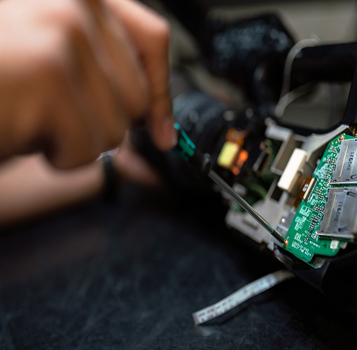

home>연구개발> 기술 연구소
기술 연구소

“글로벌 최고 수준의 기술로 고객가치에 항상 노력하겠습니다.”

선진금융 IT 관련
선진금융 IT 관련
World best 제품 개발
국내 최대의 금융자동화기기 전문 연구소로써 하드웨어와 소프트웨어 독자 개발력을 보유하고 자동화기기, 단말, 핵심모듈을 자체 개발하고 있는 기술연구소는 1983년 설립 이래로 각국의 지폐 감별 기술을 구현하는데 성공했을 뿐 아니라 EMV, EPP, CEN, UL 등 해외 시장에서 요구하는 다양한 표준규격 인증을 획득하는 등 금융 IT 기술 선진화에 기여하고 있습니다. 기술연구소의 목표는 끊임없는 연구개발과 기술투자를 통해 세계 최고의 금융자동화기기 기술력을 확보, 금융서비스 산업의 안전과 발전에 이바지하는 것입니다.
연구분야
ATM개발
Mechatronics
신기술 개발요소기술 개발
주요개발 연혁
-
- 2020년
- 차세대 AP 솔루션 개발 (핀테크 / 외환 환전), 나이지리아 MV100 개발
- 신형 모출납 기기 및 SW개발, 내수 / 수출용 신형 BRM 개발,
- 창구 디지털화를 위한 Digital Desk 기기 및 표준 SW개발, 고객 친화적
- 2019년
- 대형 마켓용 SCO (Self-Check-out) 기기 개발, EPP(Encryption Pin Pad) PCI 5.0 인증 획득
- Windows 10용 ATM S/W고객 인증 획득, 인도 MVS Project 용 Moni-Manager 개발 및 운영
- 2017년
- 리테일 시장 확대를 위한 중고가형 신규 ATM ‘MX2800SE’ 개발,
- Dual CPU 제어기술 개발, Linux OS기반 C/XFS 사양 지원 Linux ATM S/W개발
- 2014년
- 현금/수표 동시 환류기 (CCRM) 개발, 계원용 ATM (TCR) Line up 개발 (Under/High Counter),
- 금속 이물질 감지 기술 개발, Video Banking Solutio 개발
- 2012년
- 내수용 수표/현금입금 통합 모듈 (BRM11) 개발, 통장자동발행기 개발,
- New Branch Soultion (Self Service Banking, VideoBanking)개발, 계원용 ATM (TCR) 개발,
- 2010년
- Island (Bunker type) ATM 개발, 차세대 High-End CDU개발, 금융서비스 로봇 시범 사업자 선정 (지식경제부),
- I-PBM (잉크젯 통장 프린터) 개발, 업계 최초 Windows CE기반 Embedded 시스템용 NDC Application 개발
- 2008년
- 수출형 현금입금모듈 (BNA), 수출형 수표입금모듈 (BCA) 개발, 모출납자동입출금기 개발,
- 환류식 동전·지폐ATM 개발
- 2006년
- 미국 금융권용 고성능 Drive-up ATM 개발, 중국 ISO시장용 New Lobby ATM (NH 5050) 개발,
- 지폐 대응 다기능 ATM (T2 ATM) 개발
- 20004년
- 거래내역 프린터 (A4 Size) 개발, 벽면설치형 ATM 개발
- 20003년
- 벽면 설치형 및 차량운전자 거래용 (Drive-up) 현금자동 출금기 개발, 지로공과금 수납기 개발
- 2000년
- 탁상형 현금자동출금기 (NanoCash-2000) 개발, VAN CD 개발
- 1999년
- 미국 수출용 현금자동출금기 (MB-3000) 개발
- 1998년
- 미국 수출용 현금자동출금기 (Mini Bank) 개발
- 1996년
- 환류식 현금자동입출금기 (RATM) 개발, 은행 영업점서버 (Branch Processor) 개발
- 1994년
- 현금수표자동출금기 (CD) 개발, 통장프린터 개발